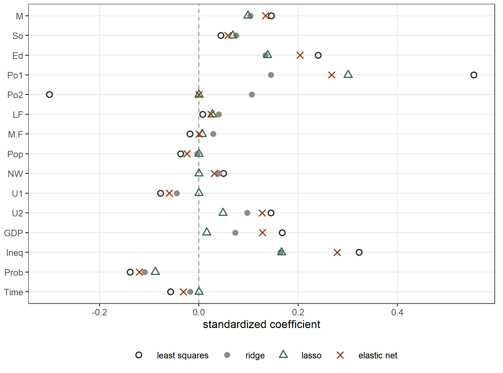
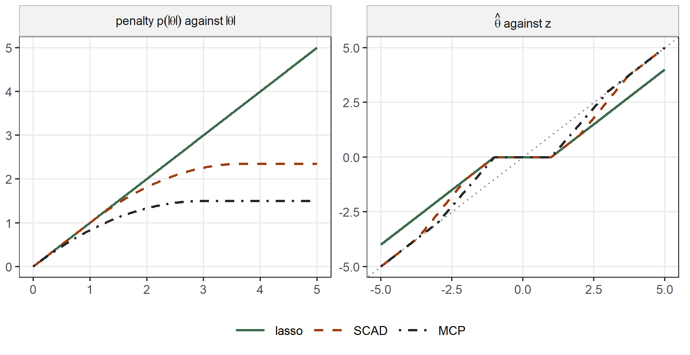
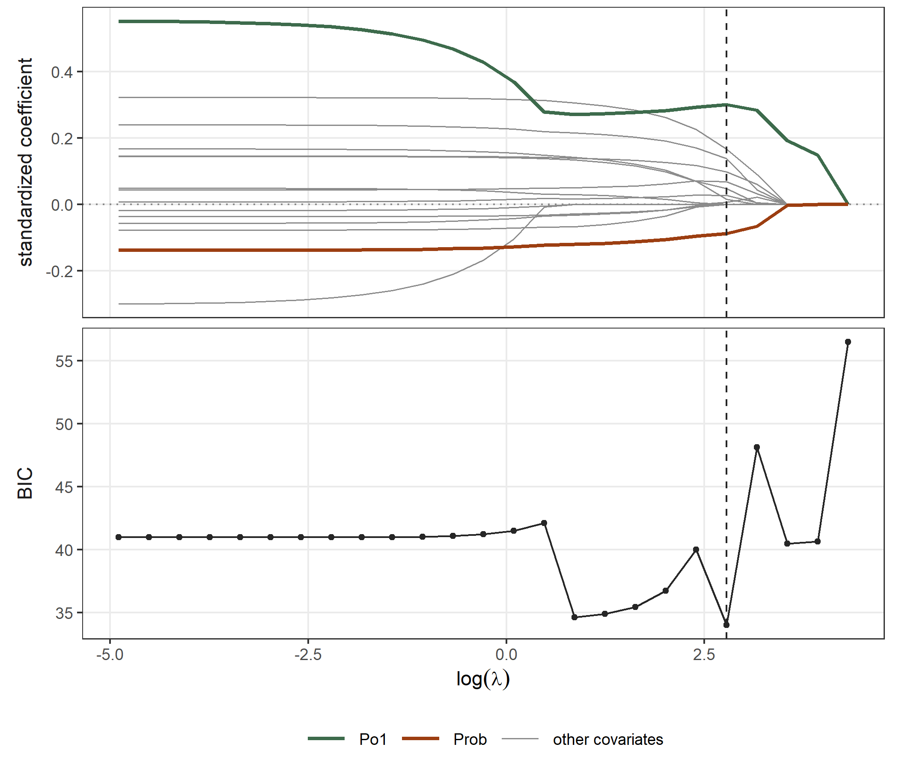
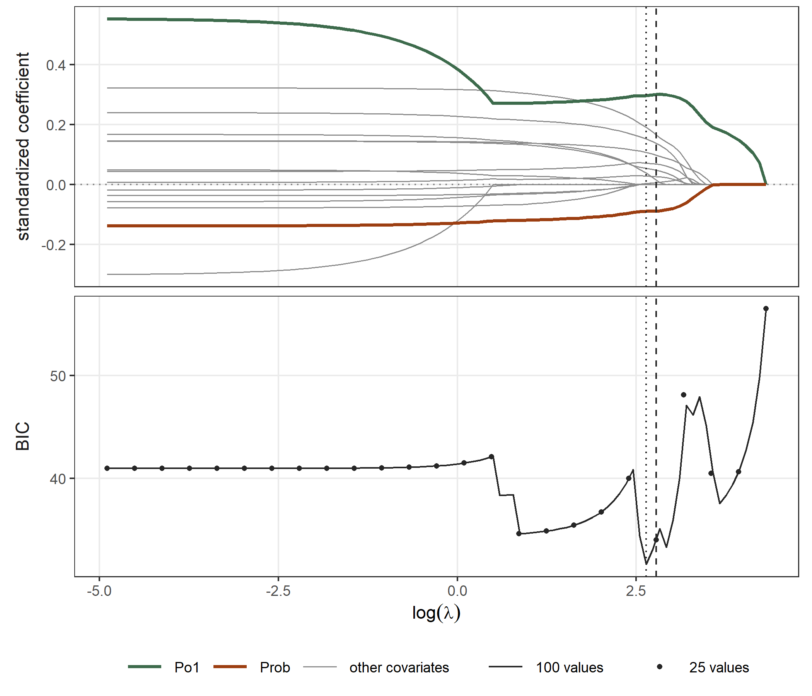
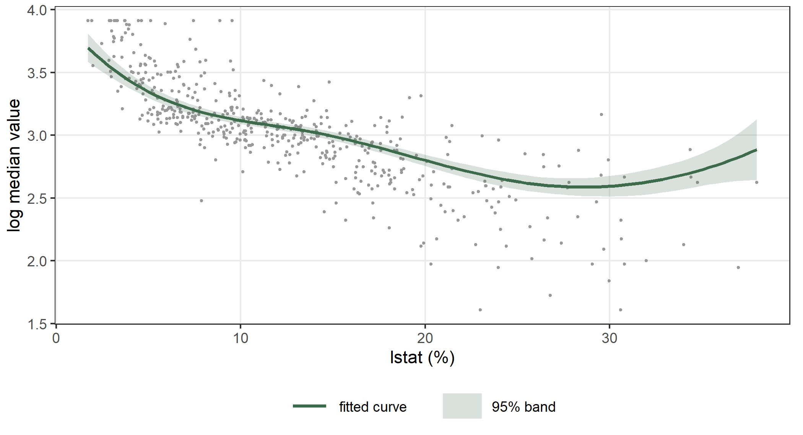
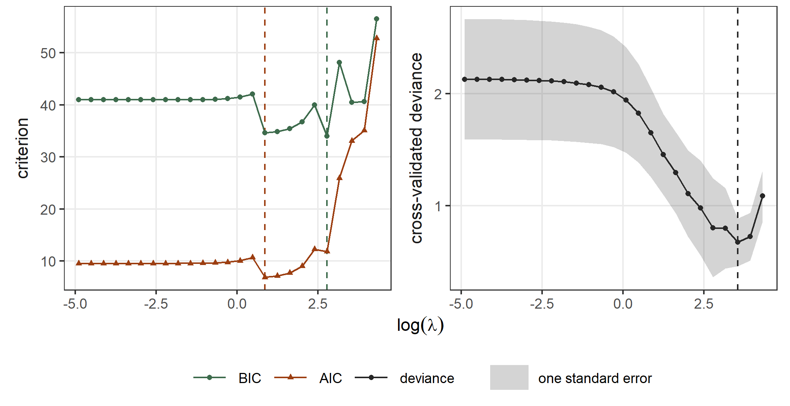

data(UScrime, package = "MASS")
UScrime$lrate <- log(UScrime$y)
xs <- ~ M + So + Ed + Po1 + Po2 + LF + M.F + Pop + NW + U1 + U2 + GDP +
Ineq + Prob + Time
X <- model.matrix(xs, data = UScrime)[, -1]
cor(UScrime$Po1, UScrime$Po2)
#> [1] 0.993586510 Penalized regression
A penalized regression subtracts a penalty on the coefficients from the log-likelihood. The penalty shrinks the estimates towards zero. Some penalties also set coefficients exactly to zero, and so they choose which covariates stay in the model. In statmodels7 a penalty is a term of the formula. The terms ridge(), lasso(), enet(), scad() and mcp() each contain a block of covariates, and the penalty acts only on the coefficients of that block. Each penalty is minus the logarithm of a density for the coefficients, with its normalizing constant. The penalty of a smooth (Chapter 6) and the penalty of a random effect (Chapter 7) have the same form, so one model can contain all three.
10.1 Ridge, lasso and elastic net
The data frame UScrime gives the crime rate in 47 states of the USA in 1960, together with 15 covariates (Ehrlich 1973; Venables and Ripley 2002). The covariates include the police expenditure in 1960 (Po1) and in 1959 (Po2), the mean years of schooling (Ed), the income inequality (Ineq) and the probability of imprisonment (Prob).
With 47 observations and 15 covariates, the least squares estimates are unstable. Some covariates are also strongly correlated, for example the two police expenditures. Let \(y_i\) be the logarithm of the crime rate. The model is \[
y_i \sim \mathrm{N}(\mu_i, \sigma), \qquad
\mu_i = \beta_0 + \sum_{j=1}^{15} \beta_j x_{ij}.
\] Let \(s_j\) be the standard deviation of covariate \(j\), and let \(u_j = s_j \beta_j\). We subtract from the log-likelihood one of three penalties on the \(u_j\): \[
\begin{aligned}
\text{ridge: } & \tfrac{1}{2}\lambda \textstyle\sum_j u_j^2
- \tfrac{p}{2}\log\{\lambda/(2\pi)\}, \\
\text{lasso: } & \lambda \textstyle\sum_j \lvert u_j\rvert
- p\log(\lambda/2), \\
\text{elastic net: } & \lambda \textstyle\sum_j
\big\{\alpha\lvert u_j\rvert + \tfrac{1}{2}(1-\alpha)u_j^2\big\}
+ p\log Z(\lambda, \alpha).
\end{aligned}
\] Here \(p = 15\), and \(Z\) is the normalizing constant of the density \(\exp[-\lambda\{\alpha\lvert u\rvert + (1-\alpha)u^2/2\}]\). The ridge penalty is minus the log density of a gaussian distribution with mean zero and precision \(\lambda\) (Hoerl and Kennard 1970). The lasso penalty is minus the log density of a Laplace distribution with rate \(\lambda\) (Tibshirani 1996). The elastic net mixes the two (Zou and Hastie 2005). The factor \(s_j\) puts the covariates on a common scale, so that the penalty does not depend on the units of each covariate. We include this factor by setting standardize = TRUE in the term.
The ridge penalty
fit_ridge <- statmod(lrate ~ ridge(xs, standardize = TRUE),
distrib = gaussian1_distrib(), data = UScrime)
summary(fit_ridge)
#> A statmod fit
#>
#> Call: statmod(formula = lrate ~ ridge(xs, standardize = TRUE), distrib = gaussian1_distrib(),
#> data = UScrime)
#>
#> Distribution: gaussian1 Observations: 47
#>
#> === mu [identity link]
#>
#> Parametric terms
#> estimate se z p lower upper
#> (Intercept) 0.9413 1.529 0.6156 0.5381 -2.055 3.938
#>
#> ridge(xs, standardize = TRUE) [15 coefficients, edf 10.49]
#> estimate se z p lower upper
#> lambda [reml] 82.78 44.44 28.9 237.1
#> M 0.008248 0.003967 2.079 0.03759 0.0004735 0.01602
#> So 0.1569 0.1236 1.269 0.20429 -0.08537 0.3992
#> Ed 0.01195 0.005384 2.22 0.02641 0.001401 0.02251
#> Po1 0.004887 0.002739 1.784 0.07440 -0.0004816 0.01026
#> Po2 0.003809 0.002964 1.285 0.19870 -0.001999 0.009617
#> LF 0.0009912 0.001236 0.8018 0.42268 -0.001432 0.003414
#> M.F 0.0009683 0.001747 0.5543 0.57940 -0.002456 0.004393
#> Pop -9.473e-05 0.001231 -0.07693 0.93868 -0.002508 0.002319
#> NW 0.0003885 0.0005481 0.7089 0.47838 -0.0006857 0.001463
#> U1 -0.00247 0.003231 -0.7643 0.44466 -0.008803 0.003863
#> ... 5 more, in coef()
#>
#> === sigma [log link]
#>
#> Parametric terms
#> estimate se z p lower upper
#> (Intercept) -1.446 0.1244 -11.62 < 1e-16 -1.69 -1.202
#>
#> 95% intervals, bayesian variance
#> conditional log-likelihood 7.018025 effective df 12.49
#> cAIC 10.937 cBIC 34.039
#> fitted in 1.5 s
#> inner max |grad|/se 2e-15 min eigen 0.00026
#> outer max |grad|/se 4.4e-10 min eigen 0.79
#> 1 note: print(summary(fit), notes = TRUE)The ridge penalty has derivatives of every order, so statmod() estimates its \(\lambda\) by REML, in the same way as a smoothing parameter (Section 2.8). The block of the ridge term reports \(\hat\lambda = 82.8\) with a standard error and an interval. The block spends 10.49 effective degrees of freedom on its 15 coefficients. The ridge shrinks every coefficient and sets none of them to zero. The standard errors and the tests of the coefficients use the Bayesian variance of Section 2.1, as for the coefficients of a smooth. The summary prints the first ten coefficients of the block, and coef(fit_ridge) gives all of them.
The package mgcv fits the same model with the argument paraPen, which puts a penalty on the coefficients of a matrix in the formula. Its penalty is \(\theta\, u^\top u\), added to the residual sum of squares. This is our penalty multiplied by \(2\sigma^2\), so its smoothing parameter is \(\theta = \sigma^2\lambda\):
UScrime$Z <- scale(X)
g_ridge <- mgcv::gam(lrate ~ Z, data = UScrime,
paraPen = list(Z = list(diag(15))), method = "REML")
c(statmod = hyper(fit_ridge)$estimate, mgcv = g_ridge$sp / g_ridge$sig2)
#> statmod mgcv.Z
#> 82.77576 82.77571
max(abs(fitted(fit_ridge) - fitted(g_ridge)))
#> [1] 7.306595e-08
c(statmod = fit_ridge@criterion, mgcv = -g_ridge$gcv.ubre)
#> statmod mgcv.REML
#> -13.34975 -13.34975The two packages give the same \(\lambda\), the same fitted values and the same REML criterion.
The lasso penalty
fit_lasso <- statmod(lrate ~ lasso(xs, standardize = TRUE),
distrib = gaussian1_distrib(), data = UScrime)
summary(fit_lasso)
#> A statmod fit
#>
#> Call: statmod(formula = lrate ~ lasso(xs, standardize = TRUE), distrib = gaussian1_distrib(),
#> data = UScrime)
#>
#> Distribution: gaussian1 Observations: 47
#>
#> === mu [identity link]
#>
#> Parametric terms
#> estimate se z p lower upper
#> (Intercept) 1.931 1.337 1.444 0.1486 -0.6894 4.552
#>
#> lasso(xs, standardize = TRUE) [15 coefficients, edf 10.00, 10 selected, 5 at zero]
#> estimate se z p lower upper
#> lambda [bic] 16.13
#> M 0.007841 0.003903 2.009 0.04452 0.000192 0.01549
#> So 0.1421 0.1284 1.107 0.26826 -0.1095 0.3937
#> Ed 0.01234 0.005974 2.066 0.03879 0.0006357 0.02405
#> Po1 0.01011 0.001831 5.52 3.393e-08 0.006519 0.0137
#> LF 0.0006615 0.001245 0.5315 0.59506 -0.001778 0.003101
#> M.F 0.0002223 0.001454 0.1529 0.87851 -0.002628 0.003072
#> U2 0.005721 0.005072 1.128 0.25934 -0.00422 0.01566
#> GDP 0.0001609 0.001017 0.1583 0.87423 -0.001832 0.002153
#> Ineq 0.004171 0.002216 1.882 0.05980 -0.0001721 0.008514
#> Prob -3.87 1.844 -2.099 0.03584 -7.485 -0.2558
#>
#> === sigma [log link]
#>
#> Parametric terms
#> estimate se z p lower upper
#> (Intercept) -1.548 0.1031 -15.01 < 1e-16 -1.751 -1.346
#>
#> 95% intervals, bayesian variance
#> conditional log-likelihood 6.093338 effective df 12.00
#> cAIC 11.813 cBIC 34.015
#> fitted in 2.44 s
#> inner max |grad|/se 0.001 min eigen 0.00032
#> zeros max |score|/kink 0.96 (5 coefficients at zero)
#> 4 notes: print(summary(fit), notes = TRUE)The lasso penalty has a kink at zero, where its derivative does not exist. REML needs the second derivative, so statmod() cannot use it here. Instead, statmod() fits the model at a sequence of values of \(\lambda\). The sequence starts at the value that sets every coefficient to zero and goes down to a small value. statmod() then keeps the value with the smallest BIC (Section 10.3). The block reports \(\hat\lambda = 16.13\) with the label [bic] and without a standard error, because \(\hat\lambda\) is one value of a finite set and not the root of a derivative. The lasso keeps 10 covariates and sets 5 coefficients exactly to zero: Po2, Pop, NW, U1 and Time. It keeps Po1 and drops Po2, while the ridge shares the effect between the two. The effective degrees of freedom of the block are the number of coefficients that are not zero (Zou, Hastie, and Tibshirani 2007).
The standard errors of the coefficients that are not zero are those of a model in which we knew that the other coefficients are zero. They ignore the selection, so they are too small, and the intervals cover less than 95% of the time. The line zeros checks the condition for a coefficient to be zero. At a zero coefficient, the derivative of the log-likelihood must be at most \(\lambda s_j\) in absolute value, so the ratio on that line must be at most one.
The package glmnet fits the lasso by coordinate descent (Friedman, Hastie, and Tibshirani 2010). It minimizes \(\tfrac{1}{2n}\sum_i (y_i - \mu_i)^2 + \lambda_g \sum_j \tilde s_j
\lvert\beta_j\rvert\). Here \(\tilde s_j\) is the standard deviation of covariate \(j\), computed with the divisor \(n\). With \(\sigma\) at its estimate, our objective in the coefficients is \(\tfrac{1}{2\sigma^2}\sum_i (y_i - \mu_i)^2 + \lambda\sum_j s_j\lvert
\beta_j\rvert\). If we multiply it by \(\sigma^2/n\), we obtain the objective of glmnet with \(\lambda_g = \lambda\sigma^2/n \cdot s_j/\tilde s_j =
\lambda\sigma^2/\sqrt{n(n-1)}\):
n <- nrow(UScrime)
lam_g <- hyper(fit_lasso)$estimate * exp(2 * coef(fit_lasso)$sigma[[1]]) /
sqrt(n * (n - 1))
g_lasso <- glmnet::glmnet(x = X, y = UScrime$lrate, lambda = lam_g,
control = list(thresh = 1e-14))
cbind(statmod = coef(fit_lasso)$mu, glmnet = as.numeric(coef(g_lasso)))
#> statmod glmnet
#> (Intercept) 1.9311168378 1.9311179004
#> lasso.M 0.0078411439 0.0078411436
#> lasso.So 0.1421228795 0.1421229776
#> lasso.Ed 0.0123446498 0.0123446416
#> lasso.Po1 0.0101081207 0.0101081201
#> lasso.Po2 0.0000000000 0.0000000000
#> lasso.LF 0.0006614866 0.0006614874
#> lasso.M.F 0.0002222769 0.0002222775
#> lasso.Pop 0.0000000000 0.0000000000
#> lasso.NW 0.0000000000 0.0000000000
#> lasso.U1 0.0000000000 0.0000000000
#> lasso.U2 0.0057207640 0.0057207641
#> lasso.GDP 0.0001609191 0.0001609183
#> lasso.Ineq 0.0041711646 0.0041711606
#> lasso.Prob -3.8703724169 -3.8703736851
#> lasso.Time 0.0000000000 0.0000000000The two fits agree to 1e-06.
The elastic net
fit_enet <- statmod(lrate ~ enet(xs, standardize = TRUE),
distrib = gaussian1_distrib(), data = UScrime)
hyper(fit_enet)[, c("name", "estimate", "source")]
#> name estimate source
#> 1 lambda 14.2017369 bic
#> 2 alpha 0.1666667 bicThe elastic net has two hyperparameters, and statmod() chooses both of them by BIC over a grid of values (Section 10.3). It chooses \(\hat\lambda = 14.20\) and \(\hat\alpha = 0.167\). With this value of \(\alpha\), most of the penalty comes from its ridge part. The fit keeps 13 covariates, more than the lasso, and sets only Po2 and M.F to zero. The block spends 12.49 effective degrees of freedom on these 13 coefficients. The number is smaller than 13 because the quadratic part of the penalty also shrinks the coefficients that are not zero. Let \(A\) be the set of these coefficients, let \(H\) be the information of the log-likelihood and let \(S\) be the second derivative of the penalty. The effective degrees of freedom of the block are \(\operatorname{tr}\{(H_{AA} + S_{AA})^{-1} H_{AA}\}\). For the lasso, \(S_{AA} = 0\), and the trace equals the number of coefficients in \(A\).
Figure 10.1 shows the standardized coefficients \(s_j\hat\beta_j\) of the three fits and of least squares.

UScrime data under least squares, the ridge, the lasso and the elastic net.
A matrix as input
The first argument of a penalized term is a one-sided formula, as above, or a matrix. We add the matrix to the data frame as a single column with $, because data.frame(X = X) would split it into 15 columns. The names of its columns become the names of the coefficients:
UScrime$X <- X
fit_mat <- statmod(lrate ~ lasso(X, standardize = TRUE),
distrib = gaussian1_distrib(), data = UScrime)
max(abs(coef(fit_mat)$mu - coef(fit_lasso)$mu))
#> [1] 0A matrix is useful when there are many covariates, or when the covariates come from another computation and have no formula. statmod() keeps a sparse matrix of the package Matrix sparse.
The scale of the covariates
The penalty treats all the coefficients in the same way. Without the factor \(s_j\), the fit would therefore depend on the units of the covariates. The covariates of UScrime have been rescaled to convenient numbers (Venables and Ripley 2002). We change the units of two of them: we multiply the population Pop by 1000 and the gross domestic product GDP by 10, in a second formula of the covariates. We then fit the lasso at the same \(\lambda\) with and without standardize:
xs_units <- ~ M + So + Ed + Po1 + Po2 + LF + M.F + I(1000 * Pop) + NW + U1 +
U2 + I(10 * GDP) + Ineq + Prob + Time
fit_s1 <- statmod(lrate ~ lasso(xs, standardize = TRUE, lambda = 17),
distrib = gaussian1_distrib(), data = UScrime)
fit_s2 <- statmod(lrate ~ lasso(xs_units, standardize = TRUE, lambda = 17),
distrib = gaussian1_distrib(), data = UScrime)
fit_r1 <- statmod(lrate ~ lasso(xs, lambda = 17),
distrib = gaussian1_distrib(), data = UScrime)
fit_r2 <- statmod(lrate ~ lasso(xs_units, lambda = 17),
distrib = gaussian1_distrib(), data = UScrime)
c(standardized = max(abs(fitted(fit_s1) - fitted(fit_s2))),
raw = max(abs(fitted(fit_r1) - fitted(fit_r2))))
#> standardized raw
#> 2.149392e-13 1.679813e-03With standardize = TRUE the two fits are the same. Without it, the fitted values change by up to 0.002 on the log scale. When we multiply a covariate by \(c\), its coefficient is divided by \(c\), and so is the penalty on that coefficient. In the new units the penalty on Pop is therefore a thousand times smaller, and the penalty on GDP ten times smaller. The default of standardize is FALSE, because a block of indicators, or a block of covariates on one scale, does not need it.
10.2 SCAD and MCP
The lasso shrinks every coefficient that it keeps, the large ones as much as the small ones, so these coefficients are biased towards zero. The SCAD penalty (Fan and Li 2001) and the MCP penalty (Zhang 2010) grow like the lasso penalty near zero, but they stop growing beyond a certain size of the coefficient. They therefore do not shrink a large coefficient. They are defined by their derivatives for \(t \ge 0\): \[ p'_{\text{SCAD}}(t) = \lambda\Big\{1(t \le \lambda) + \frac{(a\lambda - t)_+}{(a - 1)\lambda}\, 1(t > \lambda)\Big\}, \qquad p'_{\text{MCP}}(t) = \Big(\lambda - \frac{t}{\gamma}\Big)_+ , \] with \(a > 2\) and \(\gamma > 1\). The derivative of SCAD equals \(\lambda\), as for the lasso, up to \(t = \lambda\). It then falls linearly to zero at \(t = a\lambda\), and it is zero beyond \(a\lambda\). The derivative of MCP falls linearly from \(\lambda\) at \(t = 0\) to zero at \(t = \gamma\lambda\). Neither penalty is minus the log of a density: both are constant for large coefficients, so their exponential has no finite integral.
The left panel of Figure 10.2 shows the three penalties. The right panel shows their effect in the simplest problem. For one observation \(z\), the estimate \(\hat\theta\) minimizes \(\tfrac12 (z - \theta)^2 + p(\lvert\theta\rvert)\). The lasso sets \(\hat\theta\) to zero for \(\lvert z\rvert \le \lambda\) and moves every other \(z\) towards zero by \(\lambda\). SCAD and MCP also set small values to zero, but they leave \(z\) unchanged beyond \(a\lambda\) and \(\gamma\lambda\).

The two authors define the shape parameters \(a\) and \(\gamma\) for the problem of the right panel, in which the loss \(\tfrac12 (z - \theta)^2\) has curvature one. A regression is different. Fix every coefficient except \(\beta_j\) at its estimate. As a function of \(\beta_j\) alone, minus the log-likelihood is then close to a parabola \(\tfrac12 c_j (\beta_j - z_j)^2\) plus a constant. Here \(z_j\) is the value of \(\beta_j\) at the minimum of the parabola, that is, the estimate of \(\beta_j\) without the penalty when the other coefficients are fixed. The curvature of the parabola is \[
c_j = \sum_{i=1}^{n} w_i (x_{ij} - \bar x_j)^2 ,
\] where \(w_i\) is the information of observation \(i\) in the equation that contains \(\beta_j\). For a gaussian mean, \(w_i = 1/\sigma^2\). So \(c_j\) plays the role of the curvature one in the problem of the right panel. statmodels7 therefore uses the penalty \(c_j\, p_{\lambda/c_j}(\lvert\beta_j\rvert)\), with \(c_j\) computed at the fitted coefficients. Under standardize = TRUE the penalty acts on \(s_j\beta_j\), and \(c_j\) is divided by \(s_j^2\). The derivative of this penalty at zero is \(\lambda\), as for the lasso. The penalty stops growing at \(\lvert\beta_j\rvert = a\lambda/c_j\), and the lasso threshold of the same problem is \(\lambda/c_j\). The ratio between the two points is \(a\) for every coefficient, whatever the units of the covariate and whatever the distribution. With this scaling the defaults of the two authors, \(a = 3.7\) and \(\gamma = 3\), have the meaning that they have in their papers.
We fit SCAD and MCP with their default shape parameters:
fit_scad <- statmod(lrate ~ scad(xs, standardize = TRUE),
distrib = gaussian1_distrib(), data = UScrime)
summary(fit_scad)
#> A statmod fit
#>
#> Call: statmod(formula = lrate ~ scad(xs, standardize = TRUE), distrib = gaussian1_distrib(),
#> data = UScrime)
#>
#> Distribution: gaussian1 Observations: 47
#>
#> === mu [identity link]
#>
#> Parametric terms
#> estimate se z p lower upper
#> (Intercept) 0.3287 0.9345 0.3517 0.725 -1.503 2.16
#>
#> scad(xs, standardize = TRUE) [15 coefficients, edf 8.00, 8 selected, 7 at zero]
#> estimate se z p lower upper
#> lambda [bic] 23.67
#> a [fixed] 3.7
#> M 0.01178 0.003542 3.326 0.0008815 0.004838 0.01872
#> So 0.02624 0.1182 0.222 0.8243208 -0.2055 0.2579
#> Ed 0.02193 0.005031 4.358 1.310e-05 0.01207 0.03179
#> Po1 0.01153 0.001634 7.06 1.664e-12 0.008332 0.01474
#> U1 -0.001008 0.003283 -0.3069 0.7588847 -0.007441 0.005426
#> U2 0.01147 0.007719 1.486 0.1374058 -0.003662 0.0266
#> Ineq 0.007032 0.001542 4.559 5.131e-06 0.004009 0.01006
#> Prob -4.235 1.717 -2.467 0.0136210 -7.6 -0.8706
#>
#> === sigma [log link]
#>
#> Parametric terms
#> estimate se z p lower upper
#> (Intercept) -1.582 0.1031 -15.34 < 1e-16 -1.784 -1.38
#>
#> 95% intervals, bayesian variance
#> conditional log-likelihood 7.674313 effective df 10.00
#> cAIC 4.651 cBIC 23.153
#> fitted in 2.39 s
#> inner max |grad|/se 3e-05 min eigen 0.00077
#> zeros max |score|/kink 0.93 (7 coefficients at zero)
#> 5 notes: print(summary(fit), notes = TRUE)fit_mcp <- statmod(lrate ~ mcp(xs, standardize = TRUE),
distrib = gaussian1_distrib(), data = UScrime)
summary(fit_mcp)
#> A statmod fit
#>
#> Call: statmod(formula = lrate ~ mcp(xs, standardize = TRUE), distrib = gaussian1_distrib(),
#> data = UScrime)
#>
#> Distribution: gaussian1 Observations: 47
#>
#> === mu [identity link]
#>
#> Parametric terms
#> estimate se z p lower upper
#> (Intercept) 0.508 1.035 0.4907 0.6236 -1.521 2.537
#>
#> mcp(xs, standardize = TRUE) [15 coefficients, edf 7.70, 6 selected, 9 at zero]
#> estimate se z p lower upper
#> lambda [bic] 34.74
#> gamma [fixed] 3
#> M 0.01138 0.00365 3.117 0.001827 0.004224 0.01853
#> Ed 0.02026 0.004943 4.099 4.142e-05 0.01058 0.02995
#> Po1 0.01208 0.001495 8.078 6.591e-16 0.009149 0.01501
#> U2 0.007661 0.005785 1.324 0.185436 -0.003678 0.019
#> Ineq 0.007195 0.001465 4.913 8.976e-07 0.004325 0.01007
#> Prob -3.897 2.171 -1.795 0.072725 -8.153 0.3592
#>
#> === sigma [log link]
#>
#> Parametric terms
#> estimate se z p lower upper
#> (Intercept) -1.563 0.1031 -15.15 < 1e-16 -1.765 -1.36
#>
#> 95% intervals, bayesian variance
#> conditional log-likelihood 6.752010 effective df 9.70
#> cAIC 5.891 cBIC 23.833
#> fitted in 1.98 s
#> inner max |grad|/se 3e-05 min eigen 0.00066
#> zeros max |score|/kink 0.81 (9 coefficients at zero)
#> 5 notes: print(summary(fit), notes = TRUE)In both summaries the shape parameter has the label [fixed], because we did not ask statmod() to estimate it. Only \(\lambda\) is chosen by BIC: \(\hat\lambda = 23.67\) for SCAD and \(\hat\lambda = 34.74\) for MCP. SCAD keeps 8 covariates. Compared with the lasso, it drops LF, M.F and GDP and adds U1. MCP keeps 6 covariates: M, Ed, Po1, U2, Ineq and Prob. The SCAD block spends 8.00 effective degrees of freedom on its 8 coefficients. The MCP block spends 7.70 on its 6 coefficients, which is more than one per coefficient. We explain the reason below. The estimates of Po1, Ed, Ineq and M are similar in the two fits, and the coefficient of Prob is less certain under MCP than under SCAD.
The effective degrees of freedom of MCP depend on where each coefficient lies. Under standardize = TRUE and a gaussian mean, \(c_j/s_j^2\) equals \((n-1)/\sigma^2\) for every covariate. On the scale of \(u_j = s_j\beta_j\), the MCP penalty therefore stops growing at \(\gamma\hat\lambda\hat\sigma^2/(n-1) = 0.0995\). Beyond this point the derivative of the penalty is zero. At the fit, the derivative of the log-likelihood in a coefficient beyond this point must then be zero too, as in least squares. Inside the point, the derivative of the log-likelihood equals the derivative of the penalty, which on this scale is \(\lambda - c\lvert u_j\rvert/\gamma\) with \(c = (n-1)/\sigma^2\). We compute both derivatives for the six coefficients that MCP keeps:
u_m <- coef(fit_mcp)$mu[-1] * apply(X, 2, sd)
r_m <- UScrime$lrate - fitted(fit_mcp)
score_u <- crossprod(scale(X, center = TRUE, scale = FALSE), r_m) /
exp(2 * coef(fit_mcp)$sigma[[1]]) / apply(X, 2, sd)
pen_u <- pmax(lam_mcp - c_mcp * abs(u_m) / 3, 0) * sign(u_m)
round(cbind(u = u_m, score = score_u[, 1], penalty = pen_u)[on_m, ], 4)
#> u score penalty
#> mcp.M 0.1430 0.0000 0.0000
#> mcp.Ed 0.2267 0.0000 0.0000
#> mcp.Po1 0.3590 0.0000 0.0000
#> mcp.U2 0.0647 12.1596 12.1596
#> mcp.Ineq 0.2871 0.0000 0.0000
#> mcp.Prob -0.0886 -3.8153 -3.8153Four coefficients lie beyond the point. Their score is zero, so MCP does not shrink them at all. The coefficients of U2 and Prob lie inside the point. Their score equals the derivative of the penalty, so MCP shrinks them. In this region the second derivative of the penalty is negative, so the trace \(\operatorname{tr}\{(H_{AA} + S_{AA})^{-1} H_{AA}\}\) counts each of these two coefficients as more than one parameter. This is why the MCP block spends more effective degrees of freedom than it has coefficients. For SCAD the corresponding point is \(a\lambda/c_j\) with \(a = 3.7\), further from zero, and on these data no SCAD coefficient lies in the region where its penalty bends, so its effective degrees of freedom equal its number of coefficients.
The package ncvreg fits SCAD and MCP by coordinate descent along a sequence of values of \(\lambda\) (Breheny and Huang 2011). It minimizes \(\tfrac{1}{2n}\sum_i (y_i - \mu_i)^2 + \sum_j p_{\lambda_n}(\lvert
v_j\rvert)\), where \(v_j = \tilde s_j\beta_j\) and the columns are standardized with the divisor \(n\). Under standardize = TRUE and a gaussian mean, \(c_j = (n-1)/\sigma^2\). If we multiply our objective by \(\sigma^2/n\) and write it in terms of \(v_j\), we obtain the objective of ncvreg with \(\lambda_n = \lambda\sigma^2/\sqrt{n(n-1)}\) and the same \(a\) or \(\gamma\):
s_n <- apply(X, 2, sd) * sqrt((n - 1) / n)
Zn <- scale(X, center = TRUE, scale = s_n)
yc <- UScrime$lrate - mean(UScrime$lrate)
lam_s <- hyper(fit_scad)$estimate[1] * exp(2 * coef(fit_scad)$sigma[[1]]) /
sqrt(n * (n - 1))
ncv_scad <- ncvreg::ncvfit(X = Zn, y = yc, penalty = "SCAD", gamma = 3.7,
lambda = lam_s, eps = 1e-12, max.iter = 1e6)
max(abs(ncv_scad$beta / s_n - coef(fit_scad)$mu[-1]))
#> [1] 4.429364e-10The two SCAD fits agree. SCAD and MCP are not convex, so their objective can have several local minima. A coordinate descent can reach a different minimum when it starts from a different point. statmod() fits each value of \(\lambda\) starting from the fit at the previous, larger value. We compute the MCP fit of ncvreg in two ways: along a sequence of values of \(\lambda\) that ends at ours, as statmod() does, and with ncvfit() started from zero.
lam_m <- hyper(fit_mcp)$estimate[1] * exp(2 * coef(fit_mcp)$sigma[[1]]) /
sqrt(n * (n - 1))
lam_top <- max(abs(crossprod(Zn, yc))) / n
lam_seq <- exp(seq(from = log(lam_top), to = log(lam_m), length.out = 100))
ncv_path <- ncvreg::ncvreg(X = Zn, y = yc, penalty = "MCP", gamma = 3,
lambda = lam_seq, eps = 1e-12, max.iter = 1e6)
ncv_zero <- ncvreg::ncvfit(X = Zn, y = yc, penalty = "MCP", gamma = 3,
lambda = lam_m, eps = 1e-12, max.iter = 1e6)
v_mcp <- coef(fit_mcp)$mu[-1] * s_n
round(cbind(statmod = v_mcp, path = ncv_path$beta[-1, 100],
from_zero = ncv_zero$beta), 4)
#> statmod path from_zero
#> mcp.M 0.1415 0.1415 0.1415
#> mcp.So 0.0000 0.0000 0.0000
#> mcp.Ed 0.2243 0.2243 0.2243
#> mcp.Po1 0.3552 0.3552 0.3552
#> mcp.Po2 0.0000 0.0000 0.0000
#> mcp.LF 0.0000 0.0000 0.0000
#> mcp.M.F 0.0000 0.0000 0.0000
#> mcp.Pop 0.0000 0.0000 0.0000
#> mcp.NW 0.0000 0.0000 0.0000
#> mcp.U1 0.0000 0.0000 0.0000
#> mcp.U2 0.0640 0.0640 0.0640
#> mcp.GDP 0.0000 0.0000 0.0000
#> mcp.Ineq 0.2840 0.2840 0.2840
#> mcp.Prob -0.0877 -0.0877 -0.0877
#> mcp.Time 0.0000 0.0000 0.0000On these data both computations of ncvreg reach our estimates. On other data the computation from zero can end in a different local minimum. Neither package searches for a lower minimum than the one that its sequence of starting points reaches.
The shape parameter
The shape parameter is a hyperparameter like \(\lambda\). If we give it one number, as the default does, statmod() keeps it fixed at that value. If we give it several numbers, statmod() adds them to the grid of the path. If we give NULL, statmod() builds a grid of values itself. We give SCAD four values of \(a\):
fit_scad_a <- statmod(lrate ~ scad(xs, standardize = TRUE,
a = c(2.5, 3.7, 8, 30)),
distrib = gaussian1_distrib(), data = UScrime)
hyper(fit_scad_a)[, c("name", "estimate", "source")]
#> name estimate source
#> 1 lambda 23.66956 bic
#> 2 a 3.70000 bicFor each of the four values of \(a\), the path runs over 25 values of \(\lambda\), so statmod() fits the model 100 times. The smallest BIC for each value of \(a\) is
round(best_a, 3)
#> a=2.5 a=3.7 a=8 a=30
#> 23.153 23.153 25.810 37.042The smallest of these is at \(a = 3.7\), the default. The values 2.5 and 3.7 give nearly the same BIC. The larger values of \(a\) make SCAD closer to the lasso, so they shrink the large coefficients more, and they give a larger BIC.
10.3 The hyperparameters
If a penalty has derivatives of every order, as the ridge does, statmod() estimates its hyperparameter by REML, together with the other smooth hyperparameters of the model (Section 2.8). If a penalty has a kink, statmod() chooses its hyperparameters along a path. The path starts at the value of \(\lambda\) that sets every coefficient of the block to zero. It goes down geometrically to a fraction min_ratio of this value, 1e-4 by default, in n_lambda steps, 25 by default. At each value of \(\lambda\), statmod() fits the model starting from the fit at the previous value. It then computes the criterion that we set with the argument sparse_criterion of statmod(), BIC by default. In the end it keeps the value with the smallest criterion. The component history$outer of the fit contains the path:
fit_lasso@history$outer[1:10, c("value", "criterion")]
#> value criterion
#> 1 74.849725 56.50206
#> 2 50.994524 40.64252
#> 3 34.742165 40.48525
#> 4 23.669561 48.13268
#> 5 16.125884 34.01537
#> 6 10.986437 39.98581
#> 7 7.484973 36.73696
#> 8 5.099452 35.44022
#> 9 3.474216 34.87356
#> 10 2.366956 34.61744At the first value of the path every coefficient of the block is zero, and the first covariate enters at the second value. Figure 10.3 shows the coefficients and the BIC along the whole path.

UScrime data along its path of 25 values of \(\lambda\). Top: the standardized coefficients \(s_j\hat\beta_j\), with Po1 and Prob in colour. Bottom: BIC. The vertical line marks the chosen value.
Between \(\lambda = 34.7\) and \(\lambda = 23.7\), which are two neighbouring values of the path, the number of covariates in the model grows from 2 to 10. The cause is \(\sigma\), which statmod() estimates together with the coefficients. The comparison with glmnet showed that the selection depends on \(\lambda\sigma^2\), not on \(\lambda\) alone. When a covariate enters, \(\hat\sigma\) falls. Then \(\lambda\hat\sigma^2\) falls more than \(\lambda\), and more covariates can enter. Between the two values, \(\lambda\) falls by a factor of 1.47, and \(\lambda\hat\sigma^2\) falls by a factor of 2.40. For the same reason BIC is not a smooth function of \(\lambda\). It jumps by \(\log n = 3.85\) each time a coefficient enters, and the value that it chooses depends on where the points of the path fall. We fit the lasso again with a path of 100 values:
fit_lasso_100 <- statmod(lrate ~ lasso(xs, standardize = TRUE, n_lambda = 100),
distrib = gaussian1_distrib(), data = UScrime)
c(n25 = hyper(fit_lasso)$estimate, n100 = hyper(fit_lasso_100)$estimate)
#> n25 n100
#> 16.12588 14.02547
c(n25 = BIC(fit_lasso), n100 = BIC(fit_lasso_100))
#> n25 n100
#> 34.01509 31.65866
c(n25 = sum(coef(fit_lasso)$mu[-1] != 0),
n100 = sum(coef(fit_lasso_100)$mu[-1] != 0))
#> n25 n100
#> 10 10Figure 10.4 shows the coefficients along the path of 100 values and the BIC of both paths. The path of 100 values visits values between the 25 points, and some of these values have a smaller BIC. The finer path chooses \(\hat\lambda = 14.03\) with a smaller BIC and the same number of covariates. Both fits are reasonable. The difference shows that the chosen \(\lambda\) is uncertain: many values have nearly the same criterion.

UScrime data along a path of 100 values of \(\lambda\). Top: the standardized coefficients, with Po1 and Prob in colour. Bottom: BIC along the path of 100 values (line) and of 25 values (points). The vertical lines mark the values chosen by the two paths.
Held and written values
If we give the hyperparameter one number, statmod() holds it fixed at that value. If we give it several numbers, statmod() uses them as the values of the path:
fit_held <- statmod(lrate ~ lasso(xs, standardize = TRUE, lambda = 40),
distrib = gaussian1_distrib(), data = UScrime)
hyper(fit_held)[, c("name", "estimate", "held", "source")]
#> name estimate held source
#> 1 lambda 40 TRUE fixed
fit_grid <- statmod(lrate ~ lasso(xs, standardize = TRUE,
lambda = c(5, 10, 20, 40, 80)),
distrib = gaussian1_distrib(), data = UScrime)
fit_grid@history$outer[, c("value", "criterion")]
#> value criterion
#> 1 80 56.50206
#> 2 40 37.75107
#> 3 20 35.33063
#> 4 10 38.86639
#> 5 5 35.39858
hyper(fit_grid)[, c("name", "estimate", "held", "source")]
#> name estimate held source
#> 1 lambda 20 FALSE bicThe fixed value has the source fixed, and at \(\lambda = 40\) the fit keeps 1 covariate. statmod() visits the written values from the largest to the smallest and keeps the value with the smallest BIC, \(\lambda = 20\).
Two hyperparameters
The elastic net has two hyperparameters. By default statmod() builds a path of 25 values of \(\lambda\) for each of 5 values of \(\alpha\), and it computes the criterion at all 125 pairs (search = "grid"). For each \(\alpha\), the path of \(\lambda\) starts at the value that sets every coefficient to zero. This value is \(\lambda_{\max}/\alpha\), where \(\lambda_{\max}\) is the starting value of the lasso, so the paths of different values of \(\alpha\) cover different ranges. With search = "cyclic", statmod() instead changes one hyperparameter at a time, with the other fixed, until neither changes:
fit_enet_c <- statmod(lrate ~ enet(xs, standardize = TRUE, search = "cyclic"),
distrib = gaussian1_distrib(), data = UScrime)
c(grid = nrow(fit_enet@history$outer), cyclic = nrow(fit_enet_c@history$outer))
#> grid cyclic
#> 125 30
rbind(grid = hyper(fit_enet)$estimate, cyclic = hyper(fit_enet_c)$estimate)
#> [,1] [,2]
#> grid 14.201737 0.1666667
#> cyclic 4.733912 0.5000000
c(grid = BIC(fit_enet), cyclic = BIC(fit_enet_c))
#> grid cyclic
#> 33.15161 34.27947The cyclic search computes the criterion at 30 pairs, against the 125 pairs of the grid, and it stops at a pair with a larger BIC. The size of the kink of the elastic net penalty is \(\lambda\alpha\), so the criterion has a valley along the curves where \(\lambda\alpha\) is constant. A search that changes one coordinate at a time moves along such a valley in small steps. The grid is therefore the safer default. The arguments n_lambda and n_alpha set the size of the grid.
10.4 Penalties on sigma and nu
Every parameter of the distribution can have its own equation, and a penalized term can enter any of these equations. We simulate 300 observations with eight covariates. The mean depends on the first two covariates, and the standard deviation depends on the third and the fourth: \[ y_i \sim \mathrm{N}(\mu_i, \sigma_i), \qquad \mu_i = 1 + x_{i1} - 0.5\,x_{i2}, \qquad \log\sigma_i = -0.5 + 0.6\,x_{i3} - 0.3\,x_{i4}. \]
set.seed(10)
sim <- as.data.frame(matrix(rnorm(300 * 8), nrow = 300, ncol = 8))
names(sim) <- paste0("x", 1:8)
sim$y <- rnorm(300, mean = 1 + sim$x1 - 0.5 * sim$x2,
sd = exp(-0.5 + 0.6 * sim$x3 - 0.3 * sim$x4))
xx <- ~ x1 + x2 + x3 + x4 + x5 + x6 + x7 + x8The covariates are already on one scale, so we do not standardize them. We fit two models. The first has a lasso on the mean and a constant \(\sigma\). The second has a lasso on the mean and a lasso on \(\log\sigma\):
fit_sig0 <- statmod(y ~ lasso(xx), distrib = gaussian1_distrib(), data = sim)
fit_sig1 <- statmod(y ~ lasso(xx) | sigma ~ lasso(xx),
distrib = gaussian1_distrib(), data = sim)
summary(fit_sig1)
#> A statmod fit
#>
#> Call: statmod(formula = y ~ lasso(xx) | sigma ~ lasso(xx), distrib = gaussian1_distrib(),
#> data = sim)
#>
#> Distribution: gaussian1 Observations: 300
#>
#> === mu [identity link]
#>
#> Parametric terms
#> estimate se z p lower upper
#> (Intercept) 0.9904 0.02555 38.76 < 1e-16 0.9403 1.04
#>
#> lasso(xx) [8 coefficients, edf 2.00, 2 selected, 6 at zero]
#> estimate se z p lower upper
#> lambda [bic] 71.78
#> x1 0.9667 0.02474 39.07 < 1e-16 0.9182 1.015
#> x2 -0.4397 0.02587 -17 < 1e-16 -0.4904 -0.389
#>
#> === sigma [log link]
#>
#> Parametric terms
#> estimate se z p lower upper
#> (Intercept) -0.458 0.04088 -11.2 < 1e-16 -0.5381 -0.3779
#>
#> lasso(xx) [8 coefficients, edf 2.00, 2 selected, 6 at zero]
#> estimate se z p lower upper
#> lambda [bic] 55.73
#> x3 0.5332 0.04349 12.26 < 1e-16 0.448 0.6184
#> x4 -0.2327 0.04158 -5.598 2.167e-08 -0.3142 -0.1513
#>
#> 95% intervals, bayesian variance
#> conditional log-likelihood -279.706578 effective df 6.00
#> cAIC 571.413 cBIC 593.636
#> fitted in 4.58 s
#> inner max |grad|/se 0.00036 min eigen 0.72
#> zeros max |score|/kink 0.87 (12 coefficients at zero)
#> 4 notes: print(summary(fit), notes = TRUE)The summary has a lasso block in each equation, and each block has its own \(\lambda\), chosen along its own path. statmod() alternates between the two paths. It chooses \(\lambda\) for the mean with the other \(\lambda\) fixed, then the \(\lambda\) of \(\log\sigma\) with the first fixed, and it repeats this until neither value changes. The lasso of \(\log\sigma\) keeps x3 and x4, with coefficients 0.533 and -0.233 against the true values 0.6 and \(-0.3\), and it sets the other six coefficients to zero. The lasso of the mean keeps only x1 and x2. The model with a constant \(\sigma\) also keeps covariates that are not in the mean:
round(cbind(constant = coef(fit_sig0)$mu, modelled = coef(fit_sig1)$mu), 3)
#> constant modelled
#> (Intercept) 1.082 0.990
#> lasso.x1 1.092 0.967
#> lasso.x2 -0.488 -0.440
#> lasso.x3 0.000 0.000
#> lasso.x4 -0.095 0.000
#> lasso.x5 -0.043 0.000
#> lasso.x6 0.000 0.000
#> lasso.x7 0.000 0.000
#> lasso.x8 0.000 0.000
c(constant = BIC(fit_sig0), modelled = BIC(fit_sig1))
#> constant modelled
#> 942.6039 593.6359With a constant \(\sigma\), the observations with a large variance have the same weight as the others. To fit them, the lasso keeps lasso.x4 and lasso.x5 in the mean. The model of \(\sigma\) removes these covariates and lowers BIC by 349.
The degrees of freedom \(\nu\) of a Student \(t\) distribution can also have a penalized equation. We simulate a response with scale \(\exp(-0.5)\) and \(\log\nu_i = 1 + 0.8\,x_{i5}\), so the tails are heavier where \(x_5\) is small, and we put a lasso on \(\log\nu\):
sim$yt <- 1 + sim$x1 + exp(-0.5) * rt(300, df = exp(1 + 0.8 * sim$x5))
fit_nu <- statmod(yt ~ x1 | nu ~ lasso(xx),
distrib = student_t1_distrib(), data = sim)
round(coef(fit_nu)$nu, 3)
#> (Intercept) lasso.x1 lasso.x2 lasso.x3 lasso.x4 lasso.x5
#> 0.883 0.000 0.000 0.000 0.000 0.556
#> lasso.x6 lasso.x7 lasso.x8
#> 0.000 0.000 0.000The lasso keeps lasso.x5, with coefficient 0.56 against the true value 0.8. Like every coefficient that the lasso keeps, this coefficient is shrunk towards zero. In addition, \(\nu\) is hard to estimate from 300 observations, because only the tails carry information about it.
10.5 A penalty beside smooths and random effects
A penalized term is one term of the formula, so a model can contain it together with a smooth and a random effect. The data frame Boston gives the median value of the houses in 506 areas of Boston, with 13 covariates (Harrison and Rubinfeld 1978). The proportion of the population of lower status, lstat, has a strong and curved effect on the logarithm of the value. We give lstat a smooth and put a lasso on the other twelve covariates: \[
\log y_i = \beta_0 + f(\mathrm{lstat}_i) + \sum_{j=1}^{12} \beta_j x_{ij} +
\varepsilon_i .
\]
data(Boston, package = "MASS")
Boston$lmedv <- log(Boston$medv)
bx <- ~ crim + zn + indus + chas + nox + rm + age + dis + rad + tax +
ptratio + black
fit_b <- statmod(lmedv ~ s(lstat, bspline_smooth(k = 6)) +
lasso(bx, standardize = TRUE, n_lambda = 12),
distrib = gaussian1_distrib(), data = Boston)
summary(fit_b)
#> A statmod fit
#>
#> Call: statmod(formula = lmedv ~ s(lstat, bspline_smooth(k = 6)) + lasso(bx,
#> standardize = TRUE, n_lambda = 12), distrib = gaussian1_distrib(),
#> data = Boston)
#>
#> Distribution: gaussian1 Observations: 506
#>
#> === mu [identity link]
#>
#> Parametric terms
#> estimate se z p lower upper
#> (Intercept) 3.6 0.1885 19.1 < 1e-16 3.23 3.969
#>
#> s(lstat, bspline_smooth(k = 6)) [5 coefficients, edf 4.51]
#> estimate se z p lower upper
#> lambda [reml] 24.48 19.69 5.061 118.4
#> lin -0.2257 0.01409 -16.01 < 1e-16 -0.2533 -0.198
#>
#> lasso(bx, standardize = TRUE, n_lambda = 12) [12 coefficients, edf 11.00, 11 selected, 1 at zero]
#> estimate se z p lower upper
#> lambda [bic] 27.47
#> crim -0.01047 0.00123 -8.507 < 1e-16 -0.01288 -0.008054
#> zn 0.0001033 0.000521 0.1983 0.8428255 -0.0009178 0.001124
#> chas 0.08421 0.03193 2.638 0.0083466 0.02164 0.1468
#> nox -0.586 0.137 -4.277 1.899e-05 -0.8546 -0.3174
#> rm 0.07537 0.01665 4.526 6.007e-06 0.04273 0.108
#> age 0.0004443 0.0005038 0.882 0.3777613 -0.000543 0.001432
#> dis -0.03746 0.00731 -5.124 2.993e-07 -0.05178 -0.02313
#> rad 0.01056 0.002363 4.469 7.848e-06 0.00593 0.01519
#> tax -0.0004334 0.0001258 -3.446 0.0005699 -0.00068 -0.0001869
#> ptratio -0.03385 0.004852 -6.977 3.022e-12 -0.04336 -0.02434
#> black 0.0003632 9.97e-05 3.643 0.0002697 0.0001678 0.0005586
#>
#> === sigma [log link]
#>
#> Parametric terms
#> estimate se z p lower upper
#> (Intercept) -1.739 0.03143 -55.32 < 1e-16 -1.801 -1.677
#>
#> 95% intervals, bayesian variance
#> conditional log-likelihood 161.986356 effective df 17.51
#> cAIC -288.961 cBIC -214.971
#> fitted in 6.92 s
#> inner max |grad|/se 0.00063 min eigen 0.0013
#> zeros max |score|/kink 0.82 (1 coefficients at zero)
#> outer max |grad|/se 0.00028 min eigen 1
#> 3 notes: print(summary(fit), notes = TRUE)The model has two hyperparameters of two kinds. statmod() estimates the smoothing parameter of s(lstat) by REML and chooses the \(\lambda\) of the lasso by BIC along its path. At each value of \(\lambda\) on the path, statmod() estimates the smoothing parameter again. The path therefore costs one REML fit for each of its values, and we use a path of 12 values to keep the computation short. The lasso keeps 11 of the 12 covariates and sets indus to zero. The smooth spends 4.51 effective degrees of freedom on its 5 coefficients. Its free straight line lin is the slope of the linear part of \(f\) per standard deviation of lstat.
Suppose we fix the smooth and the intercept at their fitted values. The lasso coefficients then solve a lasso problem in which the smooth and the intercept are a fixed offset. glmnet() accepts an offset, so we can compare the lasso block with glmnet, using the conversion of Section 10.1:
X_b <- as.matrix(model.matrix(fit_b))
is_l <- startsWith(colnames(X_b), "lasso.")
off_b <- drop(X_b[, !is_l] %*% coef(fit_b)$mu[!is_l])
n_b <- nrow(Boston)
lam_b <- hyper(fit_b)$estimate[2] * exp(2 * coef(fit_b)$sigma[[1]]) /
sqrt(n_b * (n_b - 1))
g_b <- glmnet::glmnet(x = model.matrix(bx, data = Boston)[, -1],
y = Boston$lmedv, offset = off_b, lambda = lam_b,
intercept = FALSE, control = list(thresh = 1e-14))
max(abs(as.numeric(coef(g_b))[-1] - coef(fit_b)$mu[is_l]))
#> [1] 2.063064e-06Figure 10.5 shows the smooth of lstat, with the other covariates at their medians.

A random effect works in the same way. The data frame Cars93, which we used in Section 5.2, gives the list price of 93 cars made by 32 manufacturers. The cars of one manufacturer share a price level that their characteristics do not explain. We therefore model the logarithm of the price with a lasso on twelve characteristics of the car and a random intercept for the manufacturer: \[
\log y_i = \beta_0 + \sum_{j=1}^{12} \beta_j x_{ij} + b_{m(i)} +
\varepsilon_i , \qquad b_m \sim \mathrm{N}(0, \sigma_b) .
\]
data(Cars93, package = "MASS")
Cars93$lprice <- log(Cars93$Price)
cx <- ~ Horsepower + EngineSize + RPM + MPG.city + Fuel.tank.capacity +
Passengers + Length + Wheelbase + Width + Turn.circle + Weight + Rev.per.mile
fit_c <- statmod(lprice ~ lasso(cx, standardize = TRUE, n_lambda = 12) +
random(~ 1 | Manufacturer),
distrib = gaussian1_distrib(), data = Cars93)
summary(fit_c)
#> A statmod fit
#>
#> Call: statmod(formula = lprice ~ lasso(cx, standardize = TRUE, n_lambda = 12) +
#> random(~1 | Manufacturer), distrib = gaussian1_distrib(),
#> data = Cars93)
#>
#> Distribution: gaussian1 Observations: 93
#>
#> === mu [identity link]
#>
#> Parametric terms
#> estimate se z p lower upper
#> (Intercept) 1.726 0.5369 3.215 0.001305 0.6738 2.779
#>
#> lasso(cx, standardize = TRUE, n_lambda = 12) [12 coefficients, edf 7.00, 7 selected, 5 at zero]
#> estimate se z p lower upper
#> lambda [bic] 63.21
#> Horsepower 0.00378 0.0006814 5.547 2.905e-08 0.002444 0.005115
#> MPG.city -0.01892 0.006281 -3.013 0.002588 -0.03124 -0.006613
#> Fuel.tank.capacity 0.008009 0.01146 0.6991 0.484490 -0.01444 0.03046
#> Passengers -0.02853 0.02661 -1.072 0.283622 -0.0807 0.02363
#> Wheelbase 0.008261 0.006198 1.333 0.182576 -0.003887 0.02041
#> Turn.circle 0.005335 0.009584 0.5567 0.577745 -0.01345 0.02412
#> Weight 8.925e-06 0.000107 0.0834 0.933531 -0.0002008 0.0002187
#>
#> random(~1 | Manufacturer) [32 coefficients, edf 25.05]
#> estimate se lower upper
#> sigma [reml] 0.1878 0.03559 0.1295 0.2723
#> predicted effects (32 levels of Manufacturer)
#> Min. 1st Qu. Median Mean 3rd Qu. Max.
#> (Intercept) -0.3043 -0.1413 -0.03289 0 0.08076 0.5664
#>
#> === sigma [log link]
#>
#> Parametric terms
#> estimate se z p lower upper
#> (Intercept) -2.105 0.07332 -28.71 < 1e-16 -2.249 -1.961
#>
#> 95% intervals, bayesian variance
#> conditional log-likelihood 63.791319 effective df 34.05
#> cAIC -59.474 cBIC 26.772
#> fitted in 24.7 s
#> inner max |grad|/se 0.0016 min eigen 0.00025
#> zeros max |score|/kink 0.99 (5 coefficients at zero)
#> outer max |grad|/se 0.0037 min eigen 1
#> 3 notes: print(summary(fit), notes = TRUE)statmod() estimates the standard deviation of the random intercept by REML, \(\hat\sigma_b = 0.188\), and chooses the \(\lambda\) of the lasso by BIC along its path. At each value of \(\lambda\) it estimates \(\sigma_b\) again. On the log scale, this value of \(\hat\sigma_b\) means that the price level of a manufacturer typically differs from the average by a factor of about \(\exp(\hat\sigma_b) = 1.21\). The lasso keeps 7 of the 12 characteristics. Without the random intercept it keeps 10, and these include Length, Width and Rev.per.mile. Part of what these covariates describe is a difference between manufacturers, and in the model with the random intercept this difference goes into the random intercept.
As for the smooth, we fix the intercept and the random effects at their fitted values. The lasso block then solves a lasso problem with an offset, and we compare it with glmnet:
X_c <- as.matrix(model.matrix(fit_c))
is_c <- startsWith(colnames(X_c), "lasso.")
off_c <- drop(X_c[, !is_c] %*% coef(fit_c)$mu[!is_c])
n_c <- nrow(Cars93)
lam_c <- hyper(fit_c)$estimate[1] * exp(2 * coef(fit_c)$sigma[[1]]) /
sqrt(n_c * (n_c - 1))
g_c <- glmnet::glmnet(x = model.matrix(cx, data = Cars93)[, -1],
y = Cars93$lprice, offset = off_c, lambda = lam_c,
intercept = FALSE, control = list(thresh = 1e-14))
max(abs(as.numeric(coef(g_c))[-1] - coef(fit_c)$mu[is_c]))
#> [1] 1.368353e-0610.6 Shared hyperparameters
The argument id of Section 9.5 works for every penalized term. Terms with the same id share one value of the hyperparameter. We split the 15 covariates of UScrime into two blocks. The first block contains the economy and the police expenditure, and the second contains the population and the justice system. We put a ridge on each block:
xa <- ~ Po1 + Po2 + LF + U1 + U2 + GDP + Ineq
xb <- ~ M + So + Ed + M.F + Pop + NW + Prob + Time
fit_id <- statmod(lrate ~ ridge(xa, standardize = TRUE, label = "econ", id = "R") +
ridge(xb, standardize = TRUE, label = "pop", id = "R"),
distrib = gaussian1_distrib(), data = UScrime)
fit_two <- statmod(lrate ~ ridge(xa, standardize = TRUE, label = "econ") +
ridge(xb, standardize = TRUE, label = "pop"),
distrib = gaussian1_distrib(), data = UScrime)
hyper(fit_id)[, c("term", "estimate")]
#> term estimate
#> 1 ridge(xa, standardize = TRUE, label = "econ", id = "R") 82.77576
#> 2 ridge(xb, standardize = TRUE, label = "pop", id = "R") 82.77576
hyper(fit_two)[, c("term", "estimate")]
#> term estimate
#> 1 ridge(xa, standardize = TRUE, label = "econ") 46.02203
#> 2 ridge(xb, standardize = TRUE, label = "pop") 161.84393Two ridges with one \(\lambda\) are the same model as the ridge of Section 10.1 on all 15 covariates:
max(abs(fitted(fit_id) - fitted(fit_ridge)))
#> [1] 4.440892e-15
c(shared = fit_id@criterion, one = fit_ridge@criterion)
#> shared one
#> -13.34975 -13.34975With two values of \(\lambda\), the block of the police and the economy is shrunk less than the other block. The model with one \(\lambda\) is the model with two values under one equality constraint, inside the range of the parameters. The two models also have the same coefficients without a penalty. We can therefore compare their restricted log-likelihoods:
lr_id <- 2 * (as.numeric(logLik(fit_two, type = "marginal")) -
as.numeric(logLik(fit_id, type = "marginal")))
lr_id
#> [1] 1.330624
pchisq(lr_id, df = 1, lower.tail = FALSE)
#> [1] 0.2486942The data do not reject one \(\lambda\) for the two blocks. For a lasso, one id gives one \(\lambda\) on one path. The path starts at the value that sets the coefficients of all the terms with this id to zero. Two blocks with one id therefore visit the same values as one block that contains both, and they choose the same \(\lambda\):
fit_lid <- statmod(lrate ~ lasso(xa, standardize = TRUE, label = "econ", id = "L") +
lasso(xb, standardize = TRUE, label = "pop", id = "L"),
distrib = gaussian1_distrib(), data = UScrime)
c(one = hyper(fit_lasso)$estimate, shared = hyper(fit_lid)$estimate[1])
#> one shared
#> 16.12588 16.12588
max(abs(fit_lasso@history$outer$value - fit_lid@history$outer$value))
#> [1] 1.421085e-14Two lassos without an id have two paths. statmod() runs them in turn, each with the other \(\lambda\) fixed, until neither value changes:
fit_l2 <- statmod(lrate ~ lasso(xa, standardize = TRUE, label = "econ") +
lasso(xb, standardize = TRUE, label = "pop"),
distrib = gaussian1_distrib(), data = UScrime)
hyper(fit_l2)[, c("term", "estimate")]
#> term estimate
#> 1 lasso(xa, standardize = TRUE, label = "econ") 7.484973
#> 2 lasso(xb, standardize = TRUE, label = "pop") 29.785608
c(one = BIC(fit_lasso), two = BIC(fit_l2))
#> one two
#> 34.01509 31.13255Terms with one id can also be in different equations. On the simulated data of Section 10.4, we give the lasso of the mean and the lasso of \(\log\sigma\) one \(\lambda\):
fit_sid <- statmod(y ~ lasso(xx, id = "L") | sigma ~ lasso(xx, id = "L"),
distrib = gaussian1_distrib(), data = sim)
hyper(fit_sid)[, c("parameter", "estimate")]
#> parameter estimate
#> 1 mu 27.86283
#> 2 sigma 27.86283
c(shared = BIC(fit_sid), separate = BIC(fit_sig1))
#> shared separate
#> 597.3127 593.6359The path starts at the larger of the two values that set each block to zero, so at its first value both blocks are zero. The scores of the two equations have different sizes, so one \(\lambda\) for both equations is a strong constraint. On these data the model with two values of \(\lambda\) has the smaller BIC.
10.7 Choosing the value of lambda
The argument sparse_criterion of statmod() sets the criterion of the path. It can be bic(), the default, aic(), or cv(), which computes a ten-fold cross-validated deviance. AIC and BIC are \(-2\ell + \kappa\tau\), where \(\ell\) is the log-likelihood, \(\tau\) is the effective number of parameters, and \(\kappa\) is 2 for AIC and \(\log n\) for BIC. We fit the lasso of Section 10.1 with the other two criteria:
fit_aic <- statmod(lrate ~ lasso(xs, standardize = TRUE),
distrib = gaussian1_distrib(), data = UScrime,
sparse_criterion = aic())
set.seed(1)
fit_cv <- statmod(lrate ~ lasso(xs, standardize = TRUE),
distrib = gaussian1_distrib(), data = UScrime,
sparse_criterion = cv())
c(bic = hyper(fit_lasso)$estimate, aic = hyper(fit_aic)$estimate,
cv = hyper(fit_cv)$estimate)
#> bic aic cv
#> 16.125884 2.366956 34.742165
c(bic = sum(coef(fit_lasso)$mu[-1] != 0), aic = sum(coef(fit_aic)$mu[-1] != 0),
cv = sum(coef(fit_cv)$mu[-1] != 0))
#> bic aic cv
#> 10 13 2BIC adds \(\log n = 3.85\) for each parameter and AIC adds 2. The minimum of AIC therefore lies at a smaller \(\lambda\), and AIC keeps more covariates. Cross-validation chooses the third value of the path, and at this value the model keeps only Po1 and Prob. Figure 10.6 shows the three criteria along the path. With 47 observations, the cross-validated deviance has a large standard error, and its minimum is poorly determined: at 4 of the 25 values of \(\lambda\), the deviance lies within one standard error of the minimum. The path also contains the standard errors. The rule of one standard error keeps the largest \(\lambda\) whose deviance lies within one standard error of the minimum, and we can compute it from the path:
cv_path <- fit_cv@history$outer
best <- which.min(cv_path$criterion)
within <- cv_path$criterion <= cv_path$criterion[best] + cv_path$se[best]
lam_1se <- max(cv_path$value[within])
lam_1se
#> [1] 50.99452Here the rule gives the second value of the path, \(\lambda = 50.99\), which is larger than the minimum at \(\lambda = 34.74\): its deviance lies within one standard error of the minimum, so the rule prefers the simpler model. The argument cv(rule = "1se") applies this rule during the fit.

UScrime data. Left: BIC and AIC. Right: the cross-validated deviance with a band of one standard error. The vertical lines mark the chosen values.
The three criteria answer different questions, and Chapter 14 compares them on other models. A prediction criterion treats the chosen \(\lambda\) as known. The standard errors of the coefficients that are not zero do the same.